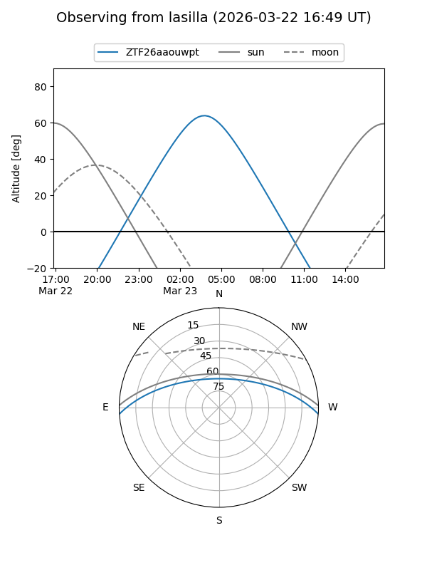
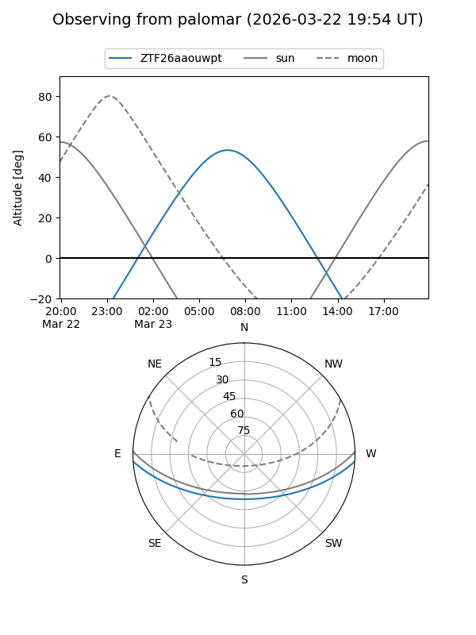

ZTF26aaouwpt
Target ZTF26aaouwpt at 2026-03-23 07:33
Aliases and brokers:
FINK: link
Lasair: link
ALeRCE: link
alt names
ZTF26aaouwpt (ztf,fink_ztf)
Coordinates:
equatorial (ra, dec) = 166.2565,-3.07525
equatorial (HMS+DMS) = 11:05:01.55,-03:04:30.89
galactic (l, b) = (258.4214,+50.36803)
Flags:
Photometry:
last ztfg=17.30
1 ztfg detections
Lightcurve
Visibility


Additional plots